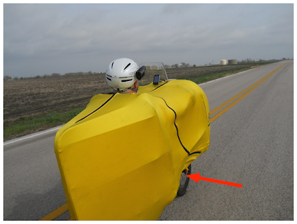
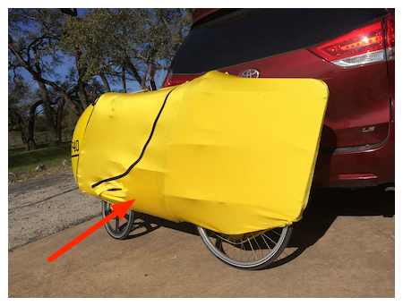
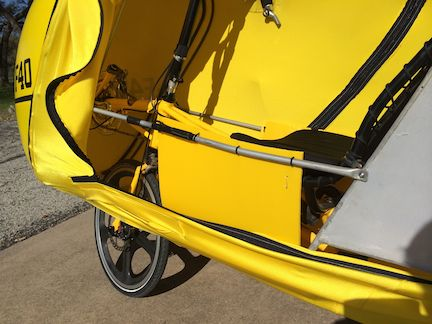
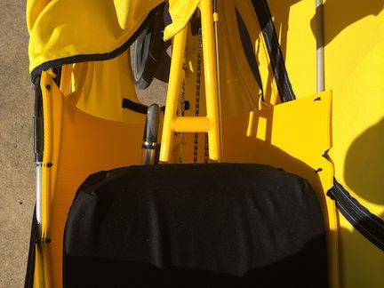

F-40 Side winds and top speed over 40 mph
30 Mar 2014
Every since I’ve had the F-40 strong gusty side winds have been challenging. Additionally, no matter how steep the hill I could not get the top speed over 40 mph.
Some feedback from existing F-40 owners on the web suggested that dealing with gusty side winds could be done by poking your elbow out into the windward side. I adopted that behavior and talk about it here: http://danhansenjr.com/2013/09/17/f-40-sticking-your-elbow-into-the-wind.html.
Well, it turns out the problem was actually different and I now don’t have to perform the elbow out maneuver any more.
When riding at the HOT Rally (Heart of Texas) in Austin this year I got to spend some time with Carl Murdock on the warrior ride who took the following picture of me riding the F-40.

Notice where the red arrow points to the wind pushing the bottom spandex inwards. I was also having a problem with getting the top speed of the F-40 over 40 mph. Carl said that for a fast F-40 the spandex needs to be as smooth as possible down the sides to keep the airflow uninterrupted as much as possible.
In the picture above the spandex is bowed in by the wind and in effect is capturing the wind like a parachute and really slowing me down.
Carl in the past had talked to Tyger Johnson who indicated that installing coroplast sheeting along the bottom area would smooth the airflow. I looked inside Carl’s F-40 to see how he had done it and Friday I bought some coroplast and installed it on my F-40.
In the below pictures you can see on the right how I have installed the coroplast on the bottom section of the F-40. (I positioned the F-40 just right in the sun light so that the sheet could be seen through the spandex).
| Before | After |
|---|---|
|  |
I pulled down the spandex in the next two pictures so that you can see how the coroplast was installed. Basically, I just cut a 12 inch by 48 inch piece of the coroplast along the grain so that bending it would bow it and not fold it. I fastened it with some zip ties.
| Rear Left | Top |
|---|---|
|  |  |
Yesterday I did the Salado Smoke ’N Spokes (Salado Texas) charity ride in winds 15 mph gusting to 21 mph. Read about it here http://danhansenjr.com/2014/03/29/f-40-salado-smoken-spokes-100k.html.
The gusty winds were no factor. Several times I was riding 30+ mph when hit with a pretty good side gust and the effect was very minimal.
Additionally, on this ride I was also able to break 40 mph for the first time.
Looks like I need to spend more time cleaning up the airflow.